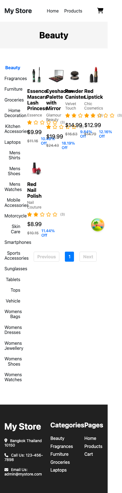

บทเรียน 16 · สร้างแอปทีละหน้า (Building Page by Page)
หน้า Category และ Pagination
Category Page & Pagination
บทที่แล้วต่อข้อมูลจริงเข้าหน้า Home ครบแล้ว — productQueries, ProductCard, ระบบ loading/error ทั้งหมดพร้อมใช้ซ้ำ บทนี้เอาของทั้งหมดนั้นมาสร้างหน้าใหม่ทั้งหน้า: หน้า Category ที่ path /categories พร้อม pagination จริง และเป็นบทที่ย้อนกลับไปหา prompt ที่คุณเขียนทิ้งไว้เองตั้งแต่ท้ายบทที่ 8
🎯 เป้าหมาย
ดู screenshot หน้า Category ของแอปต้นแบบอีกครั้ง — คราวนี้ไม่ใช่แค่ต้นแบบสำหรับฝึกเขียน prompt แล้ว แต่เป็นเป้าหมายจริงที่ต้องสร้างให้ได้

เทียบกับเวอร์ชันมือถือของแอปต้นแบบด้วย — จุดเดิมที่บทที่ 11 เจอกับ Header และบทที่ 14 เจออีกครั้งกับหน้า Home โผล่มาที่นี่เช่นกัน

เวอร์ชันของเราต้องดีกว่านี้ ทั้งเรื่องไม่ทับกันเลย และเรื่องใช้งานได้จริงบนมือถือ ไม่ใช่แค่ "ไม่พัง" ถือว่า "เสร็จ" เมื่อ:
- route
/categoriesพา MainLayout render หน้า Category จริง - เมนูหมวดหมู่ซ้าย: คลิกหมวดไหน หมวดนั้นไฮไลต์ (active state) และกริดขวาสลับเป็นสินค้าของหมวดนั้นทันที
- กริดสินค้าขอ
limit20 ชิ้นต่อหน้า แต่หมวด Beauty มีสินค้าอยู่จริงแค่ 5 ชิ้น จึงเห็นแค่ 5 การ์ด ตรงกับ screenshot ด้านบนเป๊ะ (หมวดที่มีมากกว่า 20 ชิ้นจะเห็นครบ 20 พร้อม pagination มากกว่า 1 หน้า) - Pagination ด้านล่าง grid: Previous / เลขหน้า / Next ด้วย react-paginate
- บนมือถือ เมนูหมวดหมู่กับกริดสินค้าเรียงต่อกันแนวตั้ง ไม่ทับกันแบบภาพ mobile ด้านบน และเมนูหมวดหมู่ (ที่มีหมวดเกือบ 20 ชื่อ) ไม่ดันกริดสินค้าตกจอไปไกล ๆ
📝 เขียน Prompt
ท้ายบทที่ 8 มีแบบฝึกหัดให้ลองเขียน prompt หน้า Category เองด้วยโครงสี่ส่วนเดียวกัน ถ้ายังเก็บของที่เขียนไว้ตอนนั้น หยิบมาเทียบกับ prompt ต้นแบบด้านล่างนี้ดู — ไม่มีคำตอบเดียวที่ "ถูก" แต่โครงทั้งสี่ส่วนควรครบ และตัวเลขต้องตรงกับที่เห็นในภาพเป๊ะเหมือนที่ฝึกมาตลอด
สร้างหน้า Category ของเว็บ "My Store" ตาม screenshot ที่แนบมา (path /categories)
บริบท: โปรเจกต์ my-store มี productQueries.byCategory และ productQueries.categories อยู่แล้วใน features/products/queries.ts, มี ProductCard ที่ features/products/components/ProductCard ใช้ได้เลย, และมี Button component ที่ shared/components/Button
โครงสร้างจากบนลงล่าง:
- แถบเทาด้านบนแสดงชื่อหมวดหมู่ที่เลือกอยู่ตรงกลาง (เช่น "Beauty")
- เมนูหมวดหมู่ด้านซ้าย (ดึงจาก productQueries.categories()) หมวดที่เลือกอยู่ไฮไลต์
- grid สินค้าของหมวดที่เลือกด้านขวา (ดึงจาก productQueries.byCategory) ใช้ ProductCard เดิม
- Pagination ด้านล่าง grid: Previous / เลขหน้า / Next
ข้อกำหนดทางเทคนิค:
- state page และ selectedCategory เก็บไว้ใน component ของหน้านี้เอง (useState)
- คลิกหมวดใหม่ต้องรีเซ็ต page กลับเป็น 1 เสมอ
- ใช้ react-paginate (ติดตั้งแล้ว) ทำ pagination
- mobile-first, semantic HTML
ขอบเขต: ยังไม่ต้องทำ filter อื่นนอกจากหมวดหมู่ (เช่น sort, price range) และยังไม่ต้องแก้ productQueries ที่มีอยู่🤖 สิ่งที่ Agent สร้าง
วาง prompt พร้อมรูป category_desktop.png แล้วปล่อยให้ Agent ทำงาน สิ่งแรกที่มันสร้างคือ hook เล็ก ๆ ตัวหนึ่งที่จะใช้ต่อไปตลอดทั้งแอป — useProductRoute รวมทุกปลายทางการนำทางที่เกี่ยวกับสินค้าไว้ที่เดียว
// src/shared/hooks/useProductRoute.ts
import { useNavigate } from "react-router";
export default function useProductRoute() {
const navigate = useNavigate();
const goToProductDetails = (id: number) => {
navigate(`/products/${id}`);
};
const goToCartSummary = () => {
navigate("/cart");
};
const goToCheckout = () => {
navigate("/checkout");
};
const goToOrderSuccess = () => {
navigate("/order/success");
};
return { goToProductDetails, goToCartSummary, goToCheckout, goToOrderSuccess };
}
💡 หน้านี้ใช้แค่ goToProductDetails เท่านั้น อีกสามฟังก์ชันยังไม่มีที่ไหนเรียกใช้เลยสักจุด เพราะ route /cart, /checkout, /order/success ยังไม่ถูกสร้างจริง — เหมือนกับที่ลิงก์ตะกร้าใน Header ชี้ไป /cart ไว้ล่วงหน้าตั้งแต่บทที่ 12 ทั้งที่ route จริงมาทีหลัง สร้าง hook ให้ครบตั้งแต่ตอนนี้ พอ route จริงถูกเพิ่มเข้ามาในบทที่ 18 และ 19 ทุกจุดที่เรียก hook นี้จะทำงานได้ทันทีโดยไม่ต้องแก้อะไรเพิ่ม
ตัวหน้าเองมีสอง useQuery, สอง state (page กับ selectedCategory), และเรียก goToProductDetails ตอนคลิกการ์ดสินค้า
// src/pages/Category/Category.tsx
import { useState } from "react";
import { useQuery } from "@tanstack/react-query";
import CategoryMenu from "@/features/products/components/CategoryMenu/CategoryMenu";
import ProductCard from "@/features/products/components/ProductCard/ProductCard";
import Pagination from "@/shared/components/Pagination/Pagination";
import useProductRoute from "@/shared/hooks/useProductRoute";
import { productQueries } from "@/features/products/queries";
import { Category as CategoryType } from "@/features/products/types";
import ErrorMessage from "@/shared/components/ErrorMessage/ErrorMessage";
const PAGE_LIMIT = 20;
export default function Category() {
const [selectedCategory, setSelectedCategory] = useState<CategoryType | null>(null);
const [page, setPage] = useState(1);
const { goToProductDetails } = useProductRoute();
const { data: categories } = useQuery(productQueries.categories());
const currentCategory = selectedCategory ?? categories?.[0] ?? null;
const { data, isLoading, isError } = useQuery({
...productQueries.byCategory({
category: currentCategory?.slug ?? "",
page,
limit: PAGE_LIMIT,
}),
enabled: currentCategory !== null,
});
const totalPages = data ? Math.ceil(data.total / PAGE_LIMIT) : 0;
const onCategoryClick = (category: CategoryType) => {
setSelectedCategory(category);
setPage(1);
};
return (
<div className="mx-auto max-w-7xl px-4 py-10 sm:px-6 lg:px-8">
<div className="mb-8 bg-gray-100 py-8 text-center">
<h1 className="text-2xl font-bold">{currentCategory?.name ?? "Category"}</h1>
</div>
<div className="flex flex-col gap-6 lg:flex-row">
<CategoryMenu
categories={categories ?? []}
activeCategory={currentCategory?.slug}
onCategoryClick={onCategoryClick}
/>
<div className="flex-1">
{isError ? (
<ErrorMessage />
) : isLoading ? (
// skeleton แบบ animate-pulse เดียวกับบทที่ 15 (ไม่แปะโค้ดซ้ำตรงนี้)
<div className="grid grid-cols-2 gap-4 sm:grid-cols-3 lg:grid-cols-4">
{Array.from({ length: 8 }).map((_, i) => (
<div key={i} className="aspect-square animate-pulse rounded-md bg-gray-200" />
))}
</div>
) : (
<>
<div className="grid grid-cols-2 gap-4 sm:grid-cols-3 lg:grid-cols-4">
{data?.products.map((product) => (
<ProductCard
key={product.id}
product={product}
onClick={() => goToProductDetails(product.id)}
/>
))}
</div>
{totalPages > 0 && (
<Pagination currentPage={page} totalPages={totalPages} onPageChange={setPage} />
)}
</>
)}
</div>
</div>
</div>
);
}
currentCategory คำนวณจาก selectedCategory ?? categories?.[0] ?? null — ยังไม่ได้คลิกอะไรเลยตอนหน้าโหลดครั้งแรก ก็ตกไปใช้หมวดแรกในลิสต์ที่ได้จาก API แทน (ตรงกับที่ screenshot แสดง Beauty เป็นค่าเริ่มต้น เพราะเป็นหมวดแรกที่ dummyjson ส่งมา) ส่วน enabled: currentCategory !== null กัน query สินค้าไม่ให้ยิงออกไปก่อนที่จะรู้ว่าหมวดไหนคือหมวดแรก ต่อมาคือ CategoryMenu ที่ Agent สร้าง มีการจัดการ active state ไว้แล้วตั้งแต่รอบแรก
// src/features/products/components/CategoryMenu/CategoryMenu.tsx
import { Category } from "@/features/products/types";
interface CategoryMenuProps {
categories: Category[];
activeCategory?: string;
onCategoryClick: (category: Category) => void;
}
export default function CategoryMenu({ categories, activeCategory, onCategoryClick }: CategoryMenuProps) {
return (
<nav aria-label="หมวดหมู่สินค้า" className="w-56 flex-shrink-0">
<ul className="flex flex-col gap-1">
{categories.map((category) => {
const isActive = category.slug === activeCategory;
return (
<li key={category.slug}>
<button
type="button"
aria-current={isActive ? "true" : undefined}
onClick={() => onCategoryClick(category)}
className={`w-full rounded-lg px-3 py-2 text-left text-sm transition-colors focus-visible:outline-none focus-visible:ring-2 focus-visible:ring-primary/50 ${
isActive ? "bg-primary/10 font-medium text-primary" : "text-gray-700 hover:bg-gray-100"
}`}
>
{category.name}
</button>
</li>
);
})}
</ul>
</nav>
);
}
และสุดท้ายคือ Pagination ที่ห่อ react-paginate ไว้ ห้องสมุดตัวนี้ไม่มี style มาให้เอง ต้องส่ง class ผ่าน prop ชื่อเฉพาะของมันทีละส่วน
// src/shared/components/Pagination/Pagination.tsx
import ReactPaginate from "react-paginate";
interface PaginationProps {
currentPage: number;
totalPages: number;
onPageChange: (page: number) => void;
}
export default function Pagination({ currentPage, totalPages, onPageChange }: PaginationProps) {
return (
<nav aria-label="Pagination" className="mt-8">
<ReactPaginate
previousLabel="Previous"
nextLabel="Next"
breakLabel="..."
pageCount={totalPages}
forcePage={currentPage - 1}
onPageChange={(selected) => onPageChange(selected.selected + 1)}
containerClassName="flex items-center justify-center gap-2"
pageClassName="rounded-lg border border-gray-200"
pageLinkClassName="block px-3 py-1.5 text-sm text-gray-700"
activeClassName="border-primary bg-primary"
activeLinkClassName="text-white"
previousClassName="rounded-lg border border-gray-200"
previousLinkClassName="block px-3 py-1.5 text-sm text-gray-700"
nextClassName="rounded-lg border border-gray-200"
nextLinkClassName="block px-3 py-1.5 text-sm text-gray-700"
disabledClassName="pointer-events-none opacity-40"
breakClassName="px-2 text-gray-400"
/>
</nav>
);
}
forcePage={currentPage - 1} เพราะ react-paginate นับหน้าจาก 0 ในขณะที่ state page ของเรานับจาก 1 — ต้องแปลงกลับไปกลับมาที่จุดต่อเชื่อมนี้เท่านั้น ส่วนที่เหลือของแอปทำงานด้วยเลขหน้าแบบนับจาก 1 ตลอด
🔍 ตรวจทาน
เปิด DevTools สลับ device toolbar ไปที่ 390px เหมือนทุกบทที่ผ่านมา แล้วไล่สามเลนส์
responsive — เมนูหมวดหมู่ไม่ทับกริดสินค้าแล้ว (คอนเทนเนอร์นอกสุดใช้ flex flex-col lg:flex-row ตั้งแต่รอบแรก เพราะ mobile-first เป็นกฎที่ Agent รู้เองอยู่แล้วตั้งแต่ .cursor/rules/project.mdc ในบทที่ 9) แต่ลองเลื่อนดูจริง ๆ จะเจอปัญหาที่ละเอียดกว่านั้น — CategoryMenu render หมวดหมู่เกือบ 20 ชื่อเป็น flex-col เต็มความกว้างจอ กลายเป็นลิสต์แนวตั้งยาวเหยียดที่ดันกริดสินค้าทั้งหมดตกไปอยู่ใต้จอแรก ผู้ใช้ต้องเลื่อนผ่านชื่อหมวดหมู่ 20 บรรทัดก่อนจะเจอสินค้าชิ้นแรก ไม่ใช่บั๊กแบบทับซ้อนกันเหมือนแอปต้นแบบ แต่ก็เป็น UX ที่ไม่ผ่าน checklist ข้อ "ทุก grid ต้องมีลำดับคอลัมน์ mobile → desktop ระบุไว้ครบ" ในความหมายกว้าง ๆ — เมนูควรปรับรูปแบบตามขนาดจอเหมือนกับกริด ไม่ใช่แค่กริดสินค้าอย่างเดียว
accessibility — เช็คสามจุดจาก checklist บทที่ 12: Pagination ห่อด้วย <nav aria-label="Pagination"> ✓ (เพิ่มไว้แล้วตั้งแต่ตอนสร้าง), react-paginate render เป็น <li><a> จริงในทุกปุ่ม ไม่ใช่ <div> ปลอมตัวแบบที่เจอใน Header ตอนบทที่ 12 ✓, และปุ่มหมวดที่เลือกอยู่มี aria-current="true" ครบ ✓ — เลนส์นี้ผ่านตั้งแต่รอบแรก เพราะทุกกฎเหล่านี้อยู่ใน rules file แล้วตั้งแต่บทที่ 12 กด Tab ไล่ทั้งหน้าอีกครั้งเพื่อยืนยันด้วยตาตัวเอง อย่าเชื่อแค่ checklist บนกระดาษ
maintainability — เปิด features/products/api.ts จากบทที่แล้วเทียบกับ Category.tsx ด้านบน ทั้งสองไฟล์คำนวณเรื่อง pagination แยกกันคนละสูตร: api.ts มี skip: (page - 1) * limit ส่วน Category.tsx มี Math.ceil(data.total / PAGE_LIMIT) คนละสูตร คนละไฟล์ แต่เป็นเรื่องเดียวกันทั้งคู่ — คณิตศาสตร์ของการแบ่งหน้า กติกาเดียวกับบทที่ 13 ใช้ได้กับ logic ไม่ใช่แค่ class string: เจอการคำนวณแบบเดียวกันกระจายอยู่มากกว่าหนึ่งจุด ต้องรวมเป็นฟังก์ชันเดียว
🔧 Refactor
สร้าง util รวมสูตรทั้งสองไว้ที่เดียว
// src/shared/utils/pagination.utils.ts
export function calculateOffset(page: number, limit: number): number {
return (page - 1) * limit;
}
export function calculateTotalPages(total: number, limit: number): number {
return Math.ceil(total / limit);
}
แล้วแทนที่สูตรที่เขียนสด ๆ ในทั้งสองไฟล์ด้วยการเรียก util นี้
// src/features/products/api.ts — แก้ทั้ง getProducts และ getProductsByCategory
import { calculateOffset } from "@/shared/utils/pagination.utils";
// ...
params: { skip: calculateOffset(page, limit), limit },// src/pages/Category/Category.tsx
import { calculateTotalPages } from "@/shared/utils/pagination.utils";
// ...
const totalPages = data ? calculateTotalPages(data.total, PAGE_LIMIT) : 0;ต่อมาแก้ CategoryMenu ให้กลายเป็นแถบเลื่อนแนวนอนบนมือถือ แล้วสลับกลับเป็น sidebar แนวตั้งบน desktop — เปลี่ยนแค่ className ของ nav ด้านนอกสุด โครงสร้างข้างในไม่ต้องแตะ
// src/features/products/components/CategoryMenu/CategoryMenu.tsx — แก้ className ของ nav
<nav
aria-label="หมวดหมู่สินค้า"
className="flex gap-2 overflow-x-auto pb-2 lg:w-56 lg:flex-shrink-0 lg:flex-col lg:gap-1 lg:overflow-visible lg:pb-0"
>
{categories.map((category) => {
const isActive = category.slug === activeCategory;
return (
<button
key={category.slug}
type="button"
aria-current={isActive ? "true" : undefined}
onClick={() => onCategoryClick(category)}
className={`shrink-0 rounded-lg px-3 py-2 text-left text-sm transition-colors focus-visible:outline-none focus-visible:ring-2 focus-visible:ring-primary/50 ${
isActive ? "bg-primary/10 font-medium text-primary" : "text-gray-700 hover:bg-gray-100"
}`}
>
{category.name}
</button>
);
})}
</nav>บนมือถือ (ค่าเริ่มต้นไม่มี prefix) flex จัดปุ่มหมวดหมู่เรียงแนวนอน และ overflow-x-auto ทำให้แถวนี้เลื่อนซ้าย-ขวาได้แทนที่จะตกบรรทัดเป็นลิสต์ยาว — ผู้ใช้ปัดนิ้วผ่านหมวดหมู่ได้เร็วกว่าการเลื่อนจอทั้งหน้าขึ้นลงมาก บน lg: ขึ้นไป lg:flex-col สลับกลับเป็นลิสต์แนวตั้งแบบ sidebar เดิม ส่วน shrink-0 บนปุ่มแต่ละอันกันไม่ให้ชื่อหมวดหมู่ยาว ๆ ถูกบีบจนตัวหนังสือตกบรรทัดตอนอยู่ในแถวแนวนอน — นี่คือของจริงที่ดีกว่าแอปต้นแบบ ไม่ใช่แค่ "ไม่ทับกัน" แต่ใช้งานสะดวกจริงบนมือถือ
hook เดียวกันนี้ยังปิดสัญญาที่บทที่ 14 ทิ้งไว้ด้วย — ตอนนั้น ProductCard บนหน้า Home มี onClick เป็น prop ทางเลือกที่ยังไม่ได้ส่งอะไรเข้าไปเลย เพราะยังไม่มีหน้า Product Detail ให้ไป ตอนนี้กลับไปที่ Home.tsx เพิ่ม useProductRoute แล้วส่ง goToProductDetails ให้การ์ดสินค้าทั้งสองกริดเหมือนที่ Category.tsx เพิ่งทำไปด้านบน
// src/pages/Home/Home.tsx — เติม onClick ตามที่บทที่ 14 สัญญาไว้
import useProductRoute from "@/shared/hooks/useProductRoute";
// ...
const { goToProductDetails } = useProductRoute();
// ...
<ProductCard key={product.id} product={product} onClick={() => goToProductDetails(product.id)} />ก่อน commit เพิ่ม route /categories เข้า router.tsx ตอนนี้ router มีสอง path ที่ตรงกับตาราง routes ของทั้งโปรเจกต์แล้ว
// src/app/router.tsx
import { createBrowserRouter } from "react-router";
import MainLayout from "@/app/layouts/MainLayout/MainLayout";
import Home from "@/pages/Home/Home";
import Category from "@/pages/Category/Category";
const router = createBrowserRouter([
{
path: "/",
element: <MainLayout />,
children: [
{ index: true, element: <Home /> },
{ path: "categories", element: <Category /> },
],
},
]);
export default router;
ลองคลิกลิงก์ "Products" ใน Header ที่ชี้ไป /categories มาตั้งแต่บทที่ 12 ดูตอนนี้ — ทำงานได้จริงเป็นครั้งแรก โดยไม่ต้องแก้ Header.tsx อะไรเลย ลองคลิกเปลี่ยนหน้าด้วย pagination สักสองสามครั้งด้วย จะสังเกตเห็นสิ่งที่ placeholderData: keepPreviousData จากบทที่ 15 ทำอยู่เบื้องหลัง — กริดสินค้าไม่กระพริบเป็นค่าว่างหรือ spinner ระหว่างเปลี่ยนหน้าเลย สินค้าของหน้าเก่าค้างอยู่บนจอจนกว่าข้อมูลหน้าใหม่จะมาถึงพอดี แล้วค่อยสลับ ให้ความรู้สึกลื่นไหลกว่าการกระพริบจอทุกครั้งที่กดเปลี่ยนหน้ามาก
commit เป็นจุดปิดท้ายบทนี้
git add -A
git commit -m "feat: build Category page with pagination"
หน้า Category พร้อมใช้งานจริงแล้ว ทั้งเมนูหมวดหมู่ กริดสินค้า และ pagination — และ router.tsx ตอนนี้มีสอง route ที่ทำงานได้จริง บทหน้าเราจะเพิ่ม route ที่สาม: หน้า Product Detail ที่เปิดขึ้นเมื่อคลิกการ์ดสินค้าจากทั้งหน้า Home และหน้า Category ที่เพิ่งสร้างเสร็จนี้